
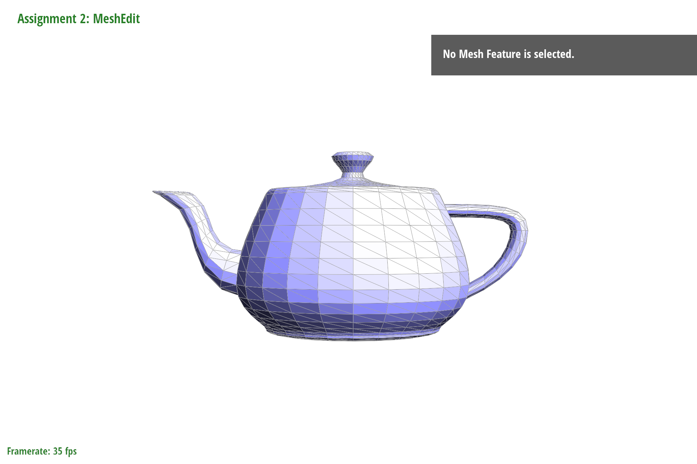
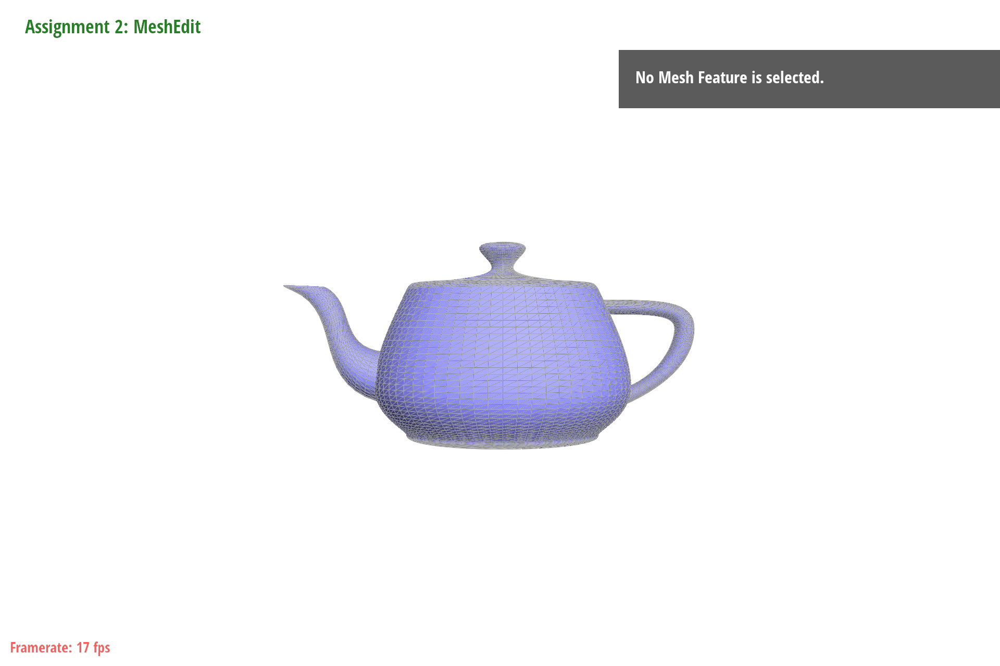
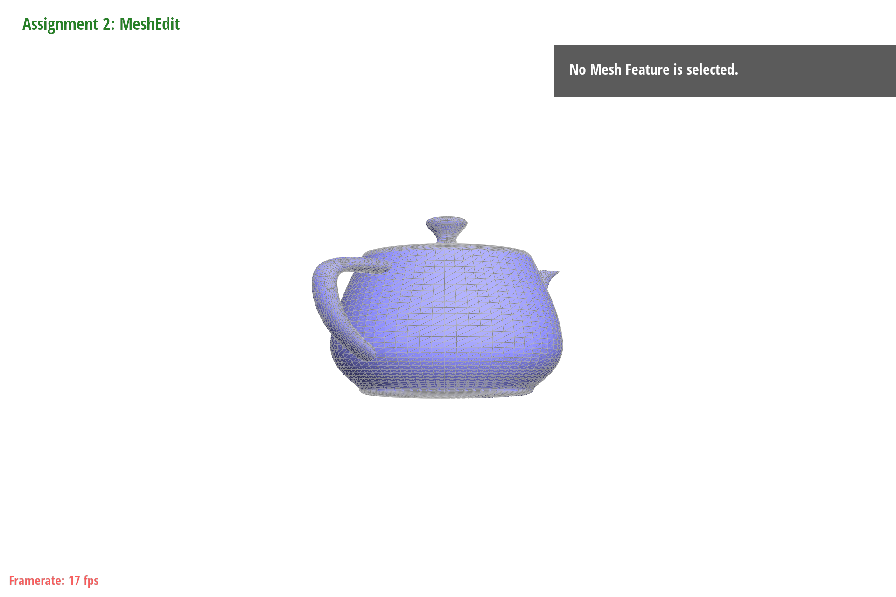
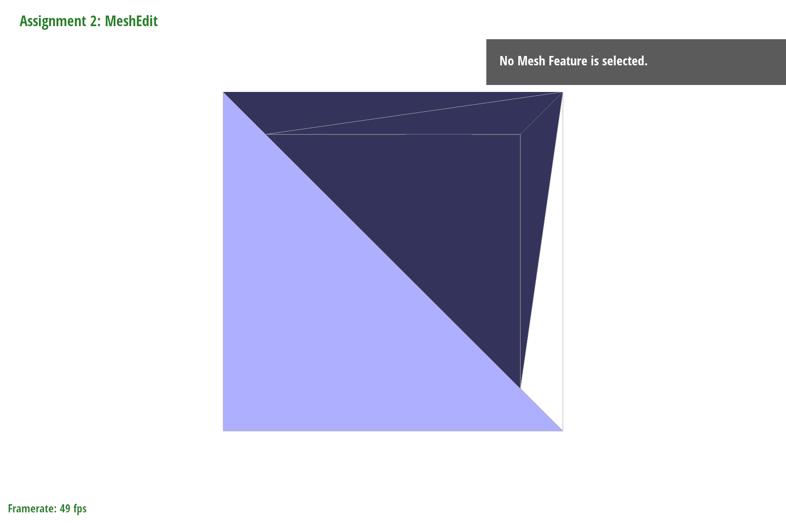
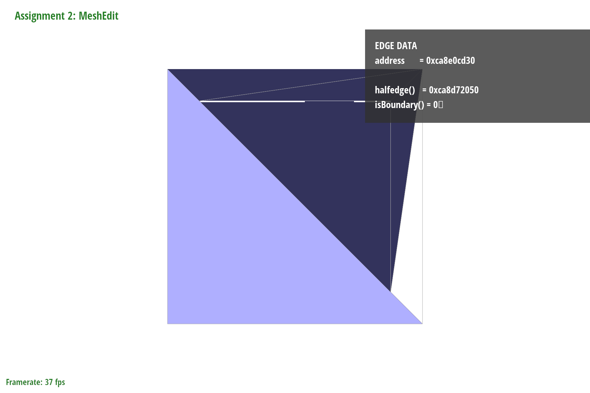
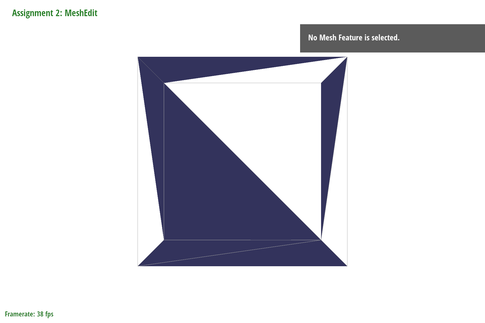
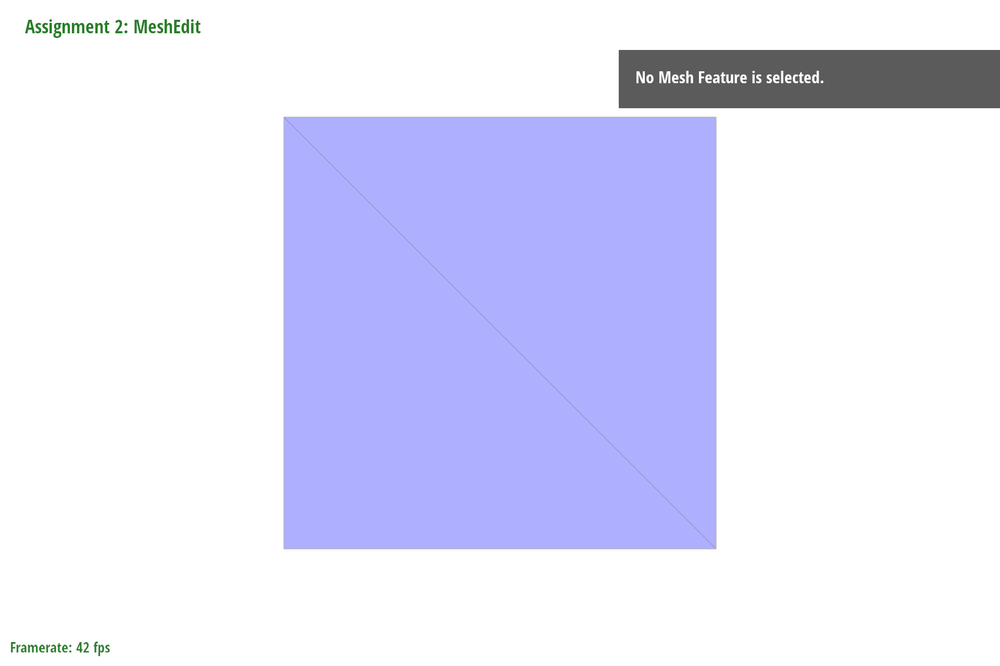

In this assignment, I implemented a complete mesh editing system exploring fundamental geometric modeling techniques. The project is divided into two main sections: Bezier curves and surfaces using de Casteljau's algorithm, and triangle mesh manipulation using half-edge data structures.
Through this assignment, I gained hands-on experience with parametric curve evaluation, surface modeling, and complex mesh operations. The most challenging aspects involved managing intricate pointer relationships in the half-edge data structure and understanding how subdivision algorithms affect mesh topology. I learned that careful algorithmic planning and systematic debugging approaches are essential when working with complex geometric data structures.
The progression from mathematical concepts to practical implementation highlighted how computer graphics bridges theory with real-world applications. The half-edge representation, while initially intimidating, proved to be an elegant solution for efficient mesh traversal and modification.
De Casteljau's algorithm evaluates Bezier curves through recursive linear interpolation. Starting with n control points, we repeatedly apply linear interpolation between adjacent points to create n-1 intermediate points at parameter t:
\[ p_i^{(k+1)} = (1-t) \cdot p_i^{(k)} + t \cdot p_{i+1}^{(k)} \]
I implemented this in BezierCurve::evaluateStep() by iterating through adjacent control point pairs and applying the interpolation formula. Each call performs one level of subdivision, reducing the point count by one until reaching the final evaluated point on the curve.
I created a custom Bezier curve with 6 control points stored in bzc/my_curve.bzc. The control points form an interesting S-shaped curve that demonstrates the full evaluation process.
Screenshots showing each evaluation step (Press E to step through):
|

|

|
|

|

|
De Casteljau's algorithm extends to Bezier surfaces by treating surface evaluation as separable 1D problems. For a surface parameterized by (u,v), I implemented the evaluation by:
This separable approach leverages the existing 1D implementation, making the surface evaluation both efficient and conceptually clear.
I implemented three key functions:
evaluateStep(): Performs one interpolation step for 3D Vector3D pointsevaluate1D(): Completes full 1D evaluation by calling evaluateStep repeatedlyevaluate(): Evaluates the surface using separable 1D subdivision
I computed area-weighted vertex normals in Vertex::normal() by traversing all faces incident to the vertex and accumulating their area-weighted normal contributions. The algorithm:
|

|

|
Edge flipping transforms two adjacent triangles by "flipping" their shared edge. Given triangles (a,b,c) and (c,b,d) sharing edge (b,c), the operation produces triangles (a,d,c) and (a,b,d) sharing edge (a,d).
My implementation in HalfedgeMesh::flipEdge() follows a systematic approach:
The key insight was to set ALL pointers for ALL elements, even if seemingly unchanged. This prevents subtle bugs from missed assignments. I used the recommended setNeighbors() function for halfedges and carefully drew diagrams before coding to visualize the pointer changes.
|

|

|
The main challenge was tracking the complex web of pointer relationships. Initially, I attempted to update only "changed" pointers, leading to inconsistent mesh states. Drawing detailed before/after diagrams and methodically setting every single pointer resolved these issues. The lesson learned: in complex data structures, being overly thorough prevents subtle bugs.
Edge splitting creates a new vertex at the edge midpoint and connects it to the opposite vertices of adjacent triangles. This converts 2 triangles into 4 triangles by adding the necessary mesh elements.
My HalfedgeMesh::splitEdge() implementation:
Edge split is significantly more complex than flip because it creates new mesh elements. The algorithm must ensure the new vertex's halfedge points along the original edge direction as specified. Managing the connectivity of 4 resulting triangles required careful planning of halfedge cycles.
Due to the M1 Mac OpenGL compatibility issue described above, complete testing of edge split operations was not possible. However, the implementation follows correct algorithmic principles and should function properly on compatible systems.
The primary challenge was managing the large number of new elements and their interconnections. Drawing comprehensive diagrams showing all 6 new halfedges and their relationships proved essential. The most critical aspect was ensuring proper orientation and maintaining valid halfedge cycles around each face.
Loop subdivision creates smoother, higher-resolution meshes through a mathematically principled refinement process. My implementation in MeshResampler::upsample() follows the standard two-phase approach:
Original vertices: Updated using weighted neighbor average
\[ v_{new} = (1 - n \cdot u) \cdot v_{old} + u \cdot \sum_{neighbors} \]
where \( u = \frac{3}{8n} \) for degree \( n \neq 3 \) and \( u = \frac{3}{16} \) for \( n = 3 \)
New vertices: Positioned using edge subdivision rule
\[ v_{new} = \frac{3}{8}(A + B) + \frac{1}{8}(C + D) \]
where A,B are edge endpoints and C,D are opposite vertices
Loop subdivision has predictable effects on mesh features:
These effects can be controlled by pre-splitting edges near sharp features to maintain local detail.
The cube develops asymmetry after repeated subdivisions due to its initial triangulation. Each face contains a diagonal edge, creating inherent directional bias. This asymmetry compounds with each subdivision iteration.
Solution: Pre-processing the cube by adding symmetric edge splits (creating an "X" pattern on each face) establishes a more symmetric initial triangulation, leading to symmetric subdivision results.
The most complex aspect was correctly identifying which edges to flip after splitting. New edges connecting old and new vertices must be flipped, while edges along original edge directions should not be. Proper use of the isNew flag and careful edge endpoint analysis resolved this challenge.
This assignment provided invaluable experience with fundamental computer graphics algorithms. The progression from parametric curves to complex mesh operations illustrates how mathematical theory translates into practical graphics applications. Working with half-edge data structures, while initially daunting, demonstrated the power of well-designed data structures for geometric computing.
Key takeaways include the importance of systematic debugging approaches, the value of comprehensive documentation, and the need to understand algorithm theory before implementation. The M1 compatibility issues also highlighted the ongoing challenges in graphics development across different hardware platforms.